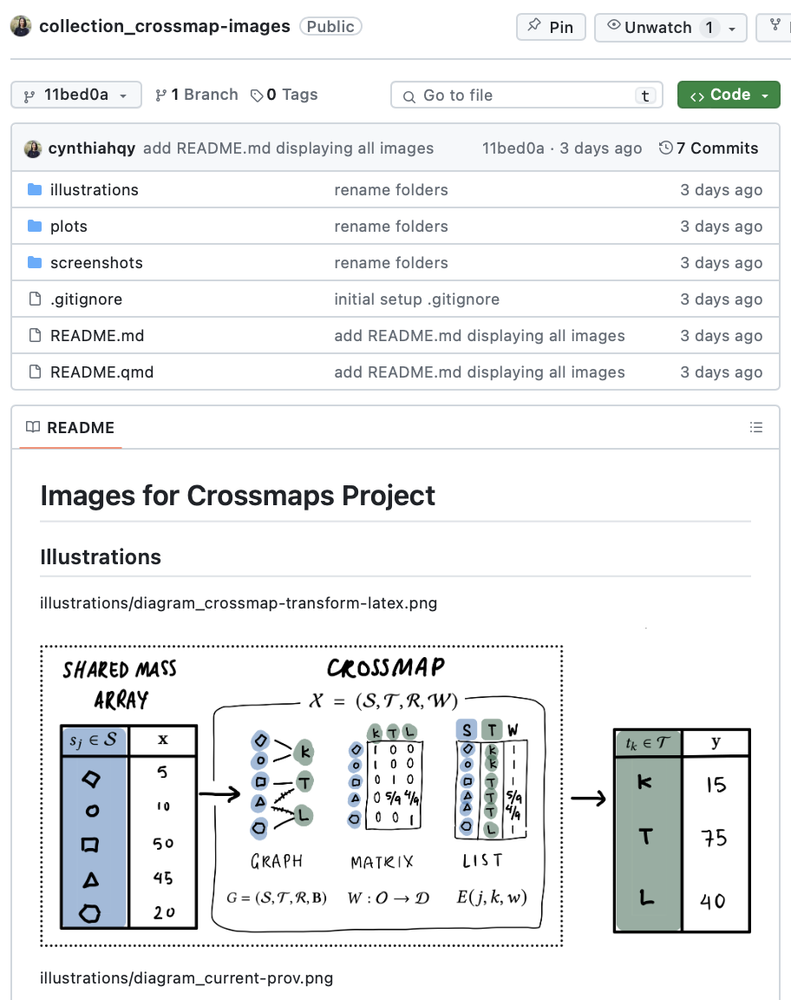
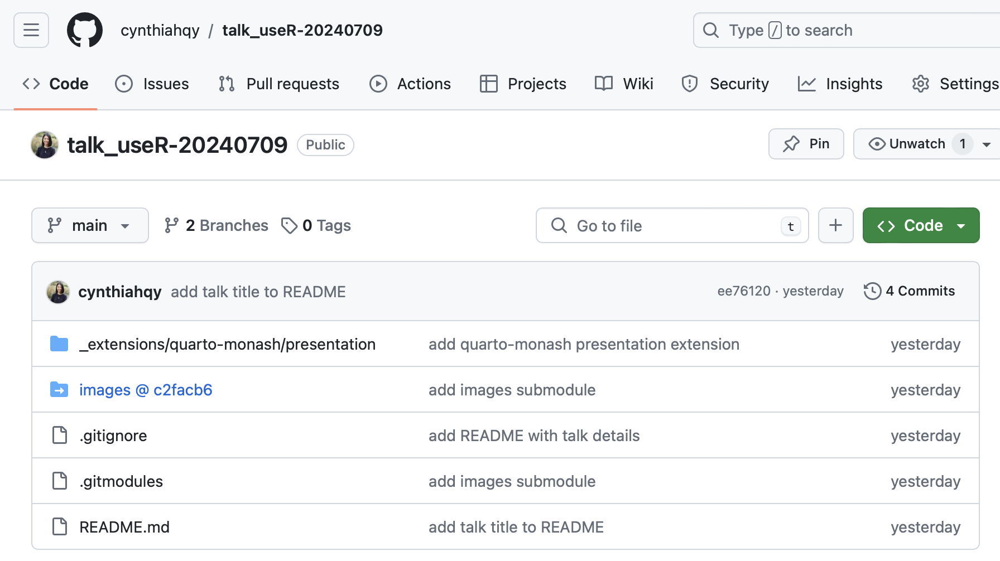

Creating and organising research graphics
I like to use scientific graphics and conceptual maps to explain and communicate my research – so much so I recently interviewed Jess Hopf, a scientific graphic designer on The Random Sample podcast1.
Now, I often use the same images across multiple talks, papers and even posters. This raises a few problems/inconveniences:
- Constant copying and pasting of images from previous documents and older folders into new ones. Updating or correcting mistakes in images across multiple documents also involves an annoying amount of copying and pasting.
- Finding images across various documents is tedious at best since I can’t just search for them in the same way as you can with text. Often tracking down a particular graphic involves looking through all my rendered documents, and then going back into the source document to either find and save the image, or get the file path of that image.
- I have no version control for my graphics. I’m not even particularly diligent at using unique affixs to name variants – often I just overwrite the old image to avoid having to go through and change the image links in my markdown documents. If I’m feeling particularly lazy, I might even copy and paste images straight from my iPad (usually drawing in Notability or Concepts) into my documents, resulting in file names like
paste-01.png.
Although in the grand scheme of things, these are all minor annoyances, they unfortunately increase the cost of incorporating graphics into my research documents – and that’s in addition to the time taken to design and create the graphics in the first place.
In order to reduce these frictions, and make implementing good research (communication) practices smoother and less time-consuming, I decided set up a git based solution for version controlling and reusing my various research graphics.
Some notes before we proceed:
- I don’t have time to explain what
gitorgit submodulesare, but I can direct you to a very fun way to learn about git: the How Git Works zine by Julia Evans (@b0rk), and the bonus comic on submodules. - I author (almost) all my documents in markdown rather than WYSIWYG editors like Microsoft Word or Powerpoint. This means reusing or updating images is mostly a matter of adding or replacing the relevant source image files into the folder I’m rendering my document in (i.e. by adding or updating submodule), not scrolling through a whole Word or Powerpoint document.
Version Controlling Images with git
I made a GitHub template repository to make setting this up simpler: https://github.com/cynthiahqy/template-image-collection.git. Click the “Use this template”. The template also includes an code for a pre-commit hook that renders the README every time you make a commit (i.e. every time you add a new image)
Even if the git submodules idea below seems a little too scary for you, create a git repository collecting all your project graphics is still great for the version control benefits. Just remember to commit each time you add or update an image.
I made a repository for all the images I’ve created for my research on Ex-Post Harmonisation: cynthiahqy/collection_crossmap-images
The directory structure looks something like this:
.
├── README.md
├── README.qmd
├── illustrations
│ ├── diagram_crossmap-transform-latex.png
│ ├── diagram_current-prov.png
│ ├── ...
│ ├── icon-database.png
│ └── icon-official-stats.png
├── plots
│ ├── ...
│ └── plot-isiccomb-split-by-income-groups.png
└── screenshots
├── ...
└── asc-poster.pngI use the loose structure of illustrations/ for images I draw on my iPad, plots/ for images generated with code (e.g. ggplots), and screenshots/ for images of things displayed on my screen including figures from other papers, or as the name suggests, screenshots of websites.
The commit history reminds me of what I’ve added to the directory and edits I’ve made:
* 106e031 add indstat ctry/year plot
* 2533d70 update crossmap approach overview image to correct numbers
* c31d119 add asc-poster
* 4a35794 add crossmap aus/usa example, vis icons
* 294acbd initial setup .gitignoreFinally, a bit of Quarto and R magic lets me generate a README.md that displays all of these images on associated GitHub repo:

README.qmd
---
title: Images for Crossmaps Project
format: gfm
---
```{r}
#| output: asis
#| echo: false
dirs <- fs::dir_ls(type = "directory")
catImages <- function(folder){
img_files <- fs::dir_ls(folder) |> sort()
cat(glue::glue("{img_files}\n\n\n\n\n\n"))
}
for (folder in dirs){
cat("## ", stringr::str_to_title(folder), "\n\n\n", sep = "")
catImages(folder)
}
```Now I have a centralised place to store and find current and past version of my images 🎉.
Submodule-ing Images into Other Repositories
Now for the submodule magic. Let’s say I wanted to use the images in the repository above in some slides on my ex-post harmonisation work. I can use git submodules to add them as follows:
To add the repo as the images/ folder in another project
git submodule add <repo url> imagesTo update the contents of images/ to match updates in the original repo (e.g. adding an image)2:
git submodule update --remote --mergeThen the images are available for me to include as inline image links wherever I want in my slides.
I implemented this submodule solution to add images into the repo for my upcoming talk at UseR! 2024: cynthiahqy/talk_useR-20240709.
Locally, my slides repo looks like:
./
├── .git/
├── .gitignore
├── .gitmodules
├── README.md
├── _extensions/
│ └── quarto-monash/
├── images/ ## added via submodule ##
│ ├── .git
│ ├── .gitignore
│ ├── README.md
│ ├── README.qmd
│ ├── illustrations/
│ ├── plots/
│ └── screenshots/
├── talk_useR-20240709.html
└── talk_useR-20240709.qmdand on GitHub.com:

Footnotes
You can also update it from inside the
images/directory viagit fetch/mergeorgit pull. See the Submodules chapter of the Pro Git Book↩︎
Citation
@online{tzuk2024,
author = {Tzuk, Omer},
title = {Managing and Reusing Research Graphics with Git},
date = {2024-06-20},
url = {https://omertzuk.github.io/posts/reusing-images-with-git-submodules/},
langid = {en}
}